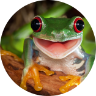

เรื่องของกบ
.png)
กบจาน
ลักษณะผิวด้านหลังมีสีน้ำตาลจุดดำ ผิวหนังขรุขระมีรอยย่น ที่ริมฝีปากมีแถบดำ ใต้คางมีจุดดำ หรือแถบลายดำ

กบพิษสีทอง
เป็นกบลูกศรพิษ ที่มีถิ่นกำเนิดในป่าฝนของโคลอมเบียกบพิษสีทองกลายเป็นสัตว์ใกล้สูญพันธุ์เนื่องจากการทำลายถิ่นที่อยู่อาศัย

กบนา
ลักษณะผิวด้านหลังมีสีน้ำตาลจุดดำ ผิวหนังขรุขระมีรอยย่น ที่ริมฝีปากมีแถบดำ ใต้คางมีจุดดำ หรือแถบลายดำ

กบฝนทะเลทราย
สายพันธุ์ที่มีรูปร่างอ้วนกลม ตาโปน จมูกสั้น ขาสั้น เท้าคล้ายจอบ และนิ้วเท้าเป็นพังผืด บริเวณใต้ท้องมีผิวหนังโปร่งใส

คางคกเเคระ
ลูกอ๊อดของคางคกสกุลนี้มีดวงตาขนาดใหญ่ ตัวสีน้ำตาลดำ มีจุดกระจายทั่วตัว มักพบตามแอ่งข้างลำธารที่มีเศษใบไม้ร่วงทับถมกัน

อึ่งปากขวด
มีความยาวจากหัวจรดถึงก้นประมาณ 73 มิลลิเมตร ลำตัวอ้วนป้อมมีลักษณะเด่นคือหน้าสั้นมากปากแคบและทู่ไม่มีฟัน


อึ่งอ่างจุดดำ
อึ่งขาคำเป็นอึ่งขนาดเล็กลักษณะคล้ายอึ่งน้ำเต้ามีแถบข้างลำตัวสีเหลืองไปถึงส่วนหัวขาตรงข้อพับมีสีเหลืองขาค่อนข้างใหญ่ทำให้กระโดดได้ไกล

กบดอร์เลีย
กบดอร์เรียเป็นกบในสกุลกบห้วยขาปุ่มพบตามป่าดิบเขาที่ชื้นพบมากในช่วงฤดูฝน พบได้ในจังหวัดเชียงใหม่ แม่ฮ่องสอน และจังหวัดภาคตะวันตก